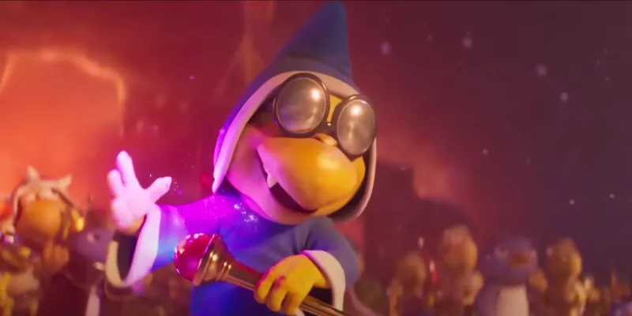

Os personagens principais do filme Super Mario Bros
Mario
O personagem mais famoso da Nintendo, Mario, irá estrelar O filme Super Mario Bros., e será uma uma aventura clássica para o encanador bigodudo. O trailer mostra Mario transportado para o Reino do Cogumelo, onde é de costume no videogame, ter a missão de resgatar a Princesa Peach de seu inimigo Bowser. Mario é conhecido por usar uma variedade de power-ups e o filme mostrará que o Super Star aparecerá ganhando habilidades diferentes.
Luigi
O leal irmão mais novo de Mario, Luigi, também estrelará O filme Super Mario Bros.. O amável Luigi é um personagem nervoso e tímido, mas isso não o impede de ajudar seus amigos. Da mesma forma que no videogame, no filme Luigi será retratado da mesma maneira, já que ele é brevemente mostrado fugindo freneticamente de uma tropa de Ossos Secos em um cenário que se parece com o Mansão do Luigi.
Sapo
Toad, o fiel companheiro da Princesa Peach, apoiará Mario em sua aventura em O filme Super Mario Bros.. Nos videogames do Mario, Toad é geralmente retratado como um personagem alegre que assusta facilmente, mas como Luigi, ele sempre ajuda seus amigos que estão em perigo. Ainda não foi confirmado se outros Toads aparecerão no filme, mas dado que Mario estará no Mushroom Kingdom, há uma boa chance de que mais apareçam.
Bowser
O maior inimigo de Mario, Bowser, será o grande mal no O filme Super Mario Bros. O Rei dos Koopas está em conflito com Mario desde 1985, pois ele frequentemente sequestra a Princesa Peach e tenta conquistar o Reino do Cogumelo. O visual icônico e ameaçador de Bowser combinado com qualidades físicas imponentes, incluindo bafo de fogo, fazem dele o chefe supremo para Mario enfrentar. Emocionantemente, uma versão aprimorada de Bowser, como Fury Bowser, pode aparecer no Mário filme enquanto ele recupera uma Super Star no trailer – embora ele seja indiscutivelmente poderoso o suficiente em sua forma atualmente revelada, já que ele já foi mostrado destruindo sozinho o Reino da Neve.
Kamek
Enquanto Mario tem Luigi e Toad, o ajudante de Bowser é Kamek, um Magikoop místico cujo uso de magia geralmente dá a Bowser uma vantagem sobre seus inimigos. Curiosamente, Kamek é o arqui-inimigo de Yoshi nos videogames, que está desaparecido no O filme Super Mario Bros.
O Rei Pinguim
Um dos personagens secundários confirmados para O filme Super Mario Bros. é o Rei Pinguim. No Mário videogames, os pinguins são personagens bastante inofensivos que, na pior das hipóteses, apenas atrapalham o caminho de Mario durante suas aventuras. Divisor da Universal Filme Super Mario Bros. está revelando as personalidades dos pinguins, que residem no Reino da Neve e estabeleceram um rei que ingenuamente enfrenta Bowser no trailer.
Princesa Peach
O personagem mais famoso da Nintendo que está na película, O Super Mario Bros. mas não apareceu no primeiro trailer é a Princesa Peach. Uma das personagens femininas mais famosas da história dos videogames, a Princesa Peach é a governante do Reino dos Cogumelos e o interesse amoroso de Mario. Peach é frequentemente a donzela arquetípica em perigo, e ela provavelmente precisará ser salva de Bowser em O filme Super Mario Bros.. No entanto, a princesa também possui habilidades únicas, incluindo a capacidade de flutuar no ar.
Donkey Kong
Outro personagem extremamente popular que está no O filme Super Mario Bros. é Donkey Kong. Primeira aparição em 1981, Donkey Kong jogo de plataforma, também marcou a estréia de Mario no videogame, Donkey Kong evoluiu de antagonista para herói descontraído e divertido que usa sua força para lutar contra qualquer um que ameace seus amigos ou bananas. O papel de Donkey Kong na O filme Super Mario Bros. ainda não é conhecido, mas é uma boa aposta que ele ajudará Mario ou Luigi durante suas missões.
Cranky Kong
O avô mal-humorado de Donkey Kong, Cranky Kong desempenhará um papel coadjuvante em O filme Super Mario Bros.. Cranky Kong, que desde então foi retransmitido para ser o vilão Kong que apareceu na década de 1980 Donkey Kong jogos de arcade, geralmente é um guia mal-humorado nos videogames que muitas vezes quebra a quarta parede. Atualmente, Cranky é o único outro Kong confirmado para O filme Super Mario Bros., embora não fosse uma surpresa se Diddy ou Funky Kong aparecessem se Mario ou Luigi viajassem para a Ilha DK.
Foreman Spike
O personagem mais obscuro confirmado para O filme Super Mario Bros. é o capataz Spike. Aparecendo pela primeira vez no Tripulação de Demolição série de videogames, Spike é um vilão que tentou impedir o progresso de Mario e Luigi enquanto trabalhavam em um canteiro de obras. Ele provavelmente será um capanga mau no o Filme Super Mario Bros.